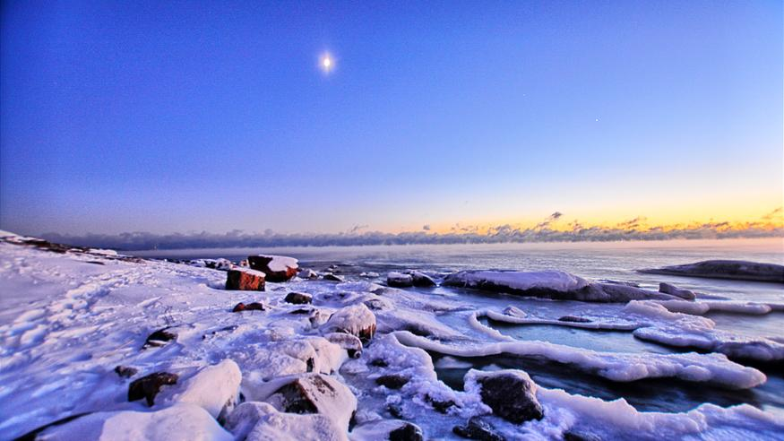

Ilmasto
 Helsingissä vallitsee merellisen ja mannerilmaston välimuoto: talvet ovat suomalaisittain melko lauhoja ja kesät lämpimiä, joskin hellepäiviä on vähemmän kuin Etelä-Suomen sisämaassa. Merituuli viilentää kaupungin ilmaa keväisin, kun taas syksyllä vaikutus on päinvastainen: esimerkiksi vertailukaudella 1981–2010 terminen talvi alkoi Helsingin Kaisaniemen mittausasemalla Ilmatieteen laitoksen mukaan vasta 7. joulukuuta. Helsingin pakkasennätys mitattiin Kaisaniemessä 10. tammikuuta 1987, jolloin lämpötila laski −34,3 °C asteeseen.
Helsingin Kaisaniemen lämpöennätys on + 33,2 °C 28. päivänä heinäkuuta 2019.[21] Sadepäiviä (sademäärä väh. 0,1 mm) on keskimäärin 182 vuodessa. Aurinkotuntien määrä on suurin rannikolla, ja se laskee sisämaahan mentäessä. Kaudella 1981–2010 lähin mittauspaikka oli Helsinki-Vantaan lentoasema, jossa havaittiin 1 780 aurinkotuntia. Luku on korkeampi kuin sisä-Suomen mittausasemilla, mutta alempi kuin Suomenlahden saaristossa.[22][23] Auringon kulma kesäpäivänseisauksessa on korkeimmillaan 53,3° ja talvipäivänseisauksessa 6,5°.